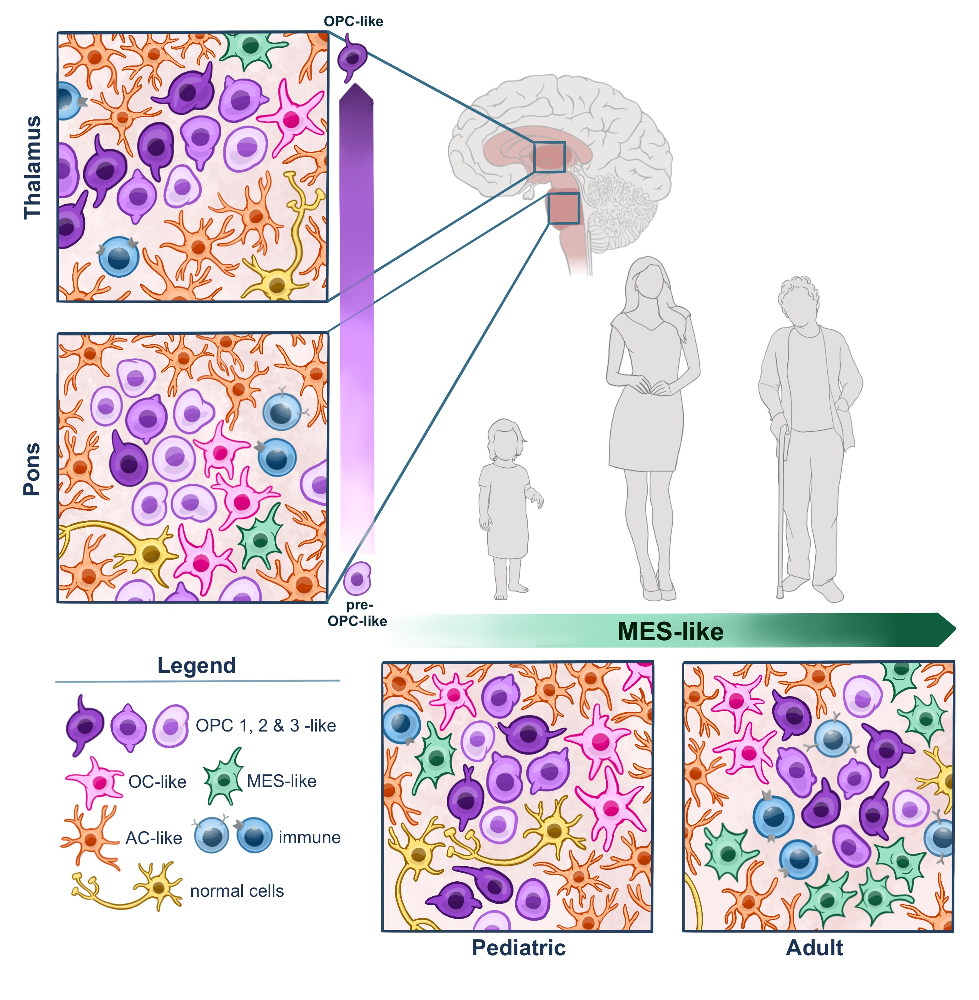

Highlighted

GABAergic neuronal lineage development determines clinically actionable targets in diffuse hemispheric glioma, H3G34-mutant
Ilon Liu*, Gustavo Alencastro Veiga Cruzeiro*, Lynn Bjerke*, Rebecca F Rogers*, Yura Grabovska, Alexander Beck, Alan Mackay, Tara Barron ... Johannes Gojo, Michelle Monje, Chris Jones*, Mariella G Filbin*
Cancer Cell · 2024 · doi:10.1016/j.ccell.2024.08.006
Featured in the Harvard Brain Science Initiative.

The landscape of tumor cell states and spatial organization in H3-K27M mutant diffuse midline glioma across age and location
Ilon Liu*#, Li Jiang*, Erik R Samuelsson*, Sergio Marco Salas, Alexander Beck, Olivia A Hack, Daeun Jeong, ... Michelle Monje*, Mats Nilsson*, Mariella G Filbin*#
Nature Genetics · 2022 · doi:10.1038/s41588-022-01236-3
Featured in Nature Genetics News & Views.